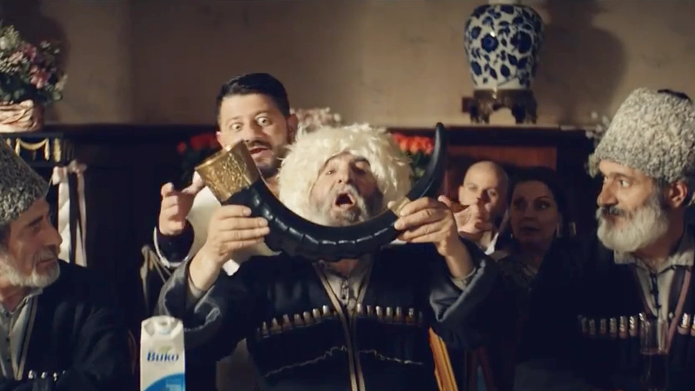

Вико
Видео недоступно на видеосервисе. Для просмотра нужна новая ссылка.
Задачи
- Разработка концепции ТВ-ролика для федеральной рекламной кампании, включая юг России и Северный Кавказ, где соки «Вико» хорошо знают и любят, несмотря на отсутствие рекламы в течение последних нескольких лет.
- Сохранение идеи бренда «Пей «Вико» - живи легко», привлечение молодой аудитории и рост продаж.
Барьеры
Высокая рекламная активность конкурентов. Традиции на Кавказе, где не приемлют никакой провокационной рекламы: двусмысленных шуток, сексуального подтекста и неуважения к старшим.
Решение
Создание концепции «Свадьба» и приглашение на роль тамады Михаила Галустяна. Известный, обаятельный, жизнерадостный армянин гармонично вписался в рекламный сюжет и стал выразителем главных идей и позиционирования «Вико» - соки премиального качества для современных людей с традиционными ценностями.